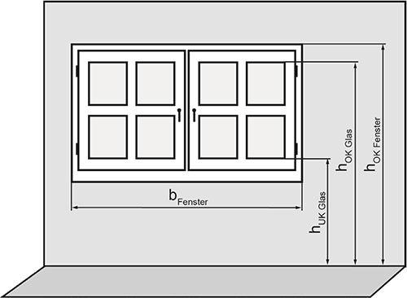

Die Fensterbreite ist die Breite des Fensters einschließlich Rahmen (Abbildung 1).
Hinweis:
Diese Fensterbreite wird auch als Rohbaumaß bezeichnet.
Die Fläche der Sichtverbindung ist die durchsichtige Fläche der Öffnungen. Bei Sichtverbindungen mit Stegen oder mehrteiligen Sichtverbindungen bildet die Summe der einzelnen durchsichtigen Flächen die Gesamtfläche der Sichtverbindung.

Abb. 1: Erläuterung von Fensterbreite (bFenster) sowie der Höhe der Unterkante der Fläche der Sichtverbindung (hUK Glas), der Höhe der Oberkante der Fläche der Sichtverbindung (hOK Glas) und der Höhe der Oberkante des Fensters (hOK Fenster) über dem Fußboden
Der Bereich des Arbeitsplatzes setzt sich zusammen aus:
Umgebungsbereich ist ein räumlicher Bereich, der sich direkt an einen Bereich oder mehrere Bereiche von Arbeitsplätzen anschließt oder durch die Raumwände oder Verkehrswege begrenzt wird.
Arbeitsfläche ist eine Fläche in Arbeitshöhe, auf der die eigentliche Arbeitsaufgabe verrichtet wird.
Bewegungsflächen sind zusammenhängende unverstellte Bodenflächen am Arbeitsplatz, die mindestens erforderlich sind, um den Beschäftigten bei ihrer Tätigkeit wechselnde Arbeitshaltungen sowie Ausgleichsbewegungen zu ermöglichen.
Eine Teilfläche ist eine Fläche mit höheren Sehanforderungen, z. B. Lesen, Schreiben, Messen, Kontrollieren und Betrachten von Fertigungsprozessen, innerhalb einer Arbeitsfläche.
Eine Kantine ist ein Raum innerhalb der Arbeitsstätte, der zur Bereitstellung und Aufnahme von Speisen und Getränken insbesondere für die Beschäftigten vorgesehen ist, z. B. Betriebsrestaurant, Cafeteria, Bistro.
Die Beleuchtungsstärke E ist ein Maß für das auf eine Fläche auftreffende Licht. Die Beleuchtungsstärke wird in Lux (lx) gemessen.
Die mittlere Beleuchtungsstärke  ist die über eine Fläche gemittelte Beleuchtungsstärke in Lux (lx).
ist die über eine Fläche gemittelte Beleuchtungsstärke in Lux (lx).
Der Mindestwert der Beleuchtungsstärke (siehe Anhänge 1 und 2)  m ist der Wert, unter den die mittlere Beleuchtungsstärke auf einer bestimmten Fläche nicht sinken darf.
m ist der Wert, unter den die mittlere Beleuchtungsstärke auf einer bestimmten Fläche nicht sinken darf.
Die horizontale Beleuchtungsstärke Eh ist die Beleuchtungsstärke auf einer horizontalen Fläche, z. B. auf einer Arbeitsfläche.
Die vertikale Beleuchtungsstärke Ev ist die Beleuchtungsstärke auf einer vertikalen Fläche.
Der Tageslichtquotient D ist das Verhältnis der Beleuchtungsstärke an einem Punkt im Innenraum Ep zur Beleuchtungsstärke im Freien ohne Verbauung Ea bei bedecktem Himmel.
D = Ep/Ea • 100 %
Unter Blendung versteht man Störungen durch zu hohe Leuchtdichten oder zu große Leuchtdichteunterschiede im Gesichtsfeld. Sie entsteht z. B. durch:
Die Farbwiedergabe ist die Wirkung einer Lichtquelle auf den Farbeindruck, den ein Mensch von einem Objekt hat, das mit dieser Lichtquelle beleuchtet wird. Der Farbwiedergabeindex Ra ist eine dimensionslose Kennzahl von 0 bis 100, mit der die Farbwiedergabeeigenschaften der Lampen klassifiziert werden. Der Farbwiedergabeindex dient auch der Bewertung von Verglasungen. Je höher der Wert ist, desto besser ist die Farbwiedergabe.
Die Sicherheitsbeleuchtung ist eine Beleuchtung, die dem gefahrlosen Verlassen der Arbeitsstätte und der Vermeidung von Gefährdungen dient, welche durch Ausfall der Allgemeinbeleuchtung entstehen können.
Hinweis:
In dieser ASR werden die Anforderungen der Sicherheitsbeleuchtung für Tätigkeiten, Arbeitsplätze, Arbeitsräume und Bereiche beschrieben.
Die Leuchtdichte L wird in Candela pro Quadratmeter [cd/m²] gemessen und beschreibt den Helligkeitseindruck einer beleuchteten oder leuchtenden Fläche.